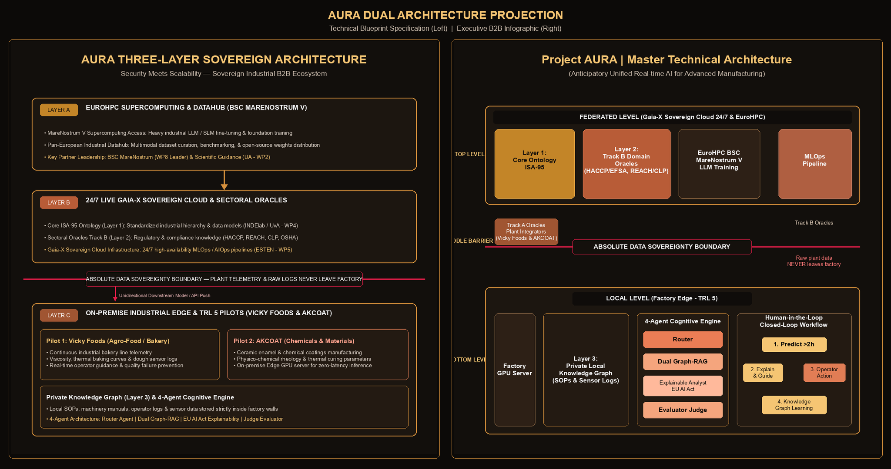
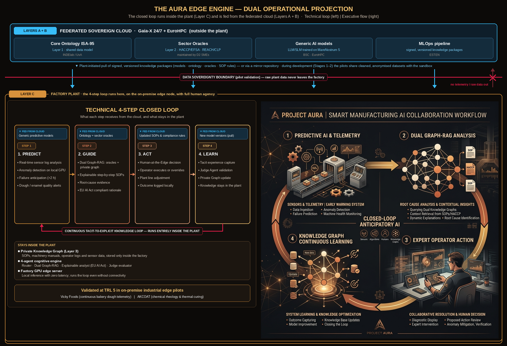
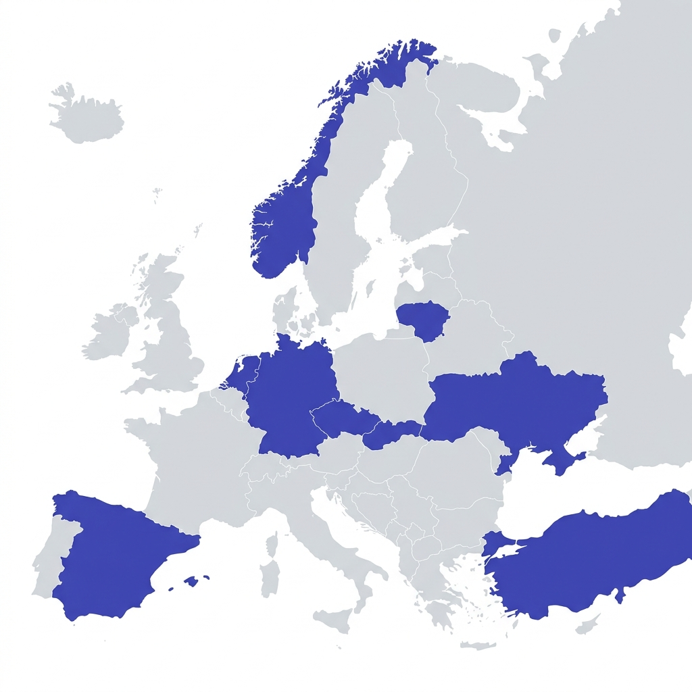

A B2B Sovereign Industrial AI Ecosystem based on Dual Architecture (Federated Cloud vs. On-Premise Factory Edge) uniting 11 key entities across 9 nations, including the Widening Member States Czechia, Slovakia and Lithuania. Participation of Türkiye and Ukraine is subject to eligibility verification (see panel below).
Topic HORIZON-CL4-2027-04-DIGITAL-EMERGING-04 restricts participation to entities established in EU Member States, Iceland, Norway and the listed associated countries (Canada, Israel, Republic of Korea, New Zealand, Switzerland, United Kingdom), and excludes entities majority-owned from non-eligible countries. The same rules apply to the SMEs funded through the competition. Status checked against public summaries (IDEAL-IST, PCN France, Horizon Europe Moldova) on 29 Oct 2026, not yet against the official topic text; still open, to be confirmed with the National Contact Point / EC.
| Partner | Country | Basis | Status |
|---|---|---|---|
| SINTEF | Norway | Associated country listed in the topic | ✓ Eligible |
| GRANT GARANT | Czechia | EU Member State (Widening) | ✓ Eligible |
| SYXIS VSI | Lithuania | EU Member State (Widening) | ✓ Eligible |
| ESTEN s.r.o. | Slovakia | EU Member State (Widening) | ✓ Eligible |
| Univ. Alicante | Spain | EU Member State | ✓ Eligible |
| INDElab / UvA | Netherlands | EU Member State | ✓ Eligible |
| KIT Karlsruhe | Germany | EU Member State | ✓ Eligible |
| BSC / MareNostrum | Spain | EU Member State | ✓ Eligible |
| Vicky Foods | Spain | EU Member State | ✓ Eligible |
| CleverStaff | Ukraine | Associated to Horizon Europe but not in the topic's participation list | ⚠ To verify |
| AKCOAT | Türkiye | Associated to Horizon Europe but not in the topic's participation list | ⚠ To verify |
AURA's consortium ecosystem is structured into 4 specialized operational blocks. Each block groups key partners, clear roles, work package leadership, and strategic deliverables to ensure seamless execution.
Global Horizon Europe consortium management, legal direction, FSTP Open Call administration, independent evaluation, and post-project B2B monetization.
Domain Knowledge Graphs, ISA-95 core ontologies, Graph-RAG interactive systems, EU AI Act explainability, predictive anomaly models, and agentic workflows.
24/7 Gaia-X sovereign cloud operation, continuous MLOps/AIOps pipelines, federated APIs, and EuroHPC MareNostrum V heavy AI model pre-training.
Real-world plant telemetry validation on Layer C on-premise GPU Edge servers across continuous bakery lines and chemical coating manufacturing.
Unified topology linking the Federated Top Level (comprising Layer A EuroHPC supercomputing & Layer B 24/7 Gaia-X sovereign cloud), the Middle Barrier for absolute data sovereignty, and the Local Bottom Level for on-premise industrial edge nodes (Layer C).

Continuous operational conversion of operator tacit experience into explicit Private Knowledge Graph intelligence across plant diagnostic workflows. The loop runs inside the plant and is fed by federated cloud services and knowledge. Data regime: during development (Stages 1–2) the pilots share cleaned, anonymised datasets for training; during pilot validation (Stage 3) raw plant data never leaves the factory.

Three-phase execution aligned with the 3-stage challenge-driven competition required by the topic: preparation and open call, prototyping by 10 teams, and TRL 5 validation of 4 finalists in the pilot plants followed by uptake.
Focus: Reference ontology, interface contract and benchmarks; competition handbook with challenges, KPIs and evaluation criteria; cleaned and anonymised pilot datasets in the sandbox; Stage 1 open call (M07) and selection of the top 10 teams.
MS1 (M05): Reference framework v1 • MS2 (M06): Handbook, sandbox & anonymised datasets ready • MS3 (M07): Stage 1 open call launched • MS4 (M11): Top 10 teams contracted
Focus: The 10 teams build their solutions in the Gaia-X sandbox with the anonymised pilot datasets (TRL 3 → 4), supported technically and commercially by the consortium and monitored by SYXIS. Benchmark and demo day select 4 finalists.
Mid-term review (M16) • MS5 (M21): 4 finalists selected
Focus: The 4 finalists install their edge nodes and validate the full loop on the production lines with zero outbound data. Grand finale at M34, followed by uptake contracts with user industries and the AURA marketplace.
MS6 (M33): TRL 5 validated • MS7 (M34): Grand finale & FSTP closure • MS8 (M35): Uptake contracts & marketplace live • MS9 (M36): Exploitation & sustainability plan
Out of the €14,000,000 total project budget, €12,000,000 is directly allocated to third-party SMEs (FSTP), while the remaining €2,000,000 covers the consortium's core activities. The cascade funding follows the 3-stage challenge-driven competition fixed by the topic.
Total Project Budget
FSTP Cascade Funding (SMEs)
Consortium Core Activities
FSTP only as grants, to single SMEs or SME-led teams (SME + research organisations / public bodies) from eligible countries. Maximum €2.55M per third party.
Teams answer one of the two pilot challenges. An external jury run by the consortium selects the top 10.
10 × €300,000. Prototypes (TRL 3–4) in the sandbox using cleaned, anonymised pilot data. Benchmark + demo day select the top 4.
4 × €2,250,000. Integration and TRL 5 validation in the Vicky Foods and AKCOAT plants with zero outbound data, then uptake contracts.
Training, mentoring and evaluation are not paid as FSTP: they are carried out by the consortium within its €2.0M (WP4), as the topic requires.
Initial proposal of tasks per Work Package, the partner best suited to lead each one and the person-months (PM) of every partner. Consortium partners carry out the research (reference framework and benchmarks), run the competition and evaluate; the solutions are developed by the SME-led teams funded through the 3-stage FSTP competition; the pilots provide anonymised data during development and host the TRL 5 validation. Click a task to read its description.
| Partner | WP1 | WP2 | WP3 | WP4 | WP5 | WP6 | Total PM | Budget | % budget | HE eligibility |
|---|---|---|---|---|---|---|---|---|---|---|
| SINTEF | 14.6 | 0.4 | 0.3 | 3.9 | 0.7 | 4.7 | 24.6 | 300,000 € | 15.0% | ✓ Eligible |
| GRANT GARANT | 1.4 | – | – | 16.7 | – | 17.4 | 35.5 | 280,000 € | 14.0% | ✓ Eligible |
| SYXIS VSI | 1.3 | – | – | 25.0 | 0.8 | 0.8 | 27.9 | 220,000 € | 11.0% | ✓ Eligible |
| ESTEN s.r.o. | 0.5 | 0.6 | 22.4 | 2.8 | 1.6 | 1.3 | 29.2 | 230,000 € | 11.5% | ✓ Eligible |
| Univ. Alicante | 1.1 | 17.9 | 2.7 | 3.3 | 3.3 | 0.8 | 29.1 | 250,000 € | 12.5% | ✓ Eligible |
| INDElab / UvA | 0.1 | 11.5 | 0.8 | 1.5 | 1.5 | 0.5 | 16.0 | 160,000 € | 8.0% | ✓ Eligible |
| KIT Karlsruhe | 0.7 | 8.7 | 0.3 | 1.7 | 1.4 | 0.3 | 13.0 | 140,000 € | 7.0% | ✓ Eligible |
| CleverStaff | 0.1 | 9.1 | 5.0 | 7.2 | 1.9 | 0.6 | 23.9 | 120,000 € | 6.0% | ⚠ To verify |
| BSC / MareNostrum | 0.1 | – | 9.7 | 0.8 | – | 1.0 | 11.6 | 100,000 € | 5.0% | ✓ Eligible |
| Vicky Foods | 0.5 | 1.1 | 0.3 | 0.4 | 12.6 | 0.6 | 15.5 | 100,000 € | 5.0% | ✓ Eligible |
| AKCOAT | 0.5 | 1.1 | 0.3 | 0.7 | 14.2 | 0.6 | 17.4 | 100,000 € | 5.0% | ⚠ To verify |
| Total | 20.9 | 50.4 | 41.8 | 64.1 | 38.0 | 28.6 | 243.8 | 2,000,000 € | 100% |
The €12M FSTP follows the 3-stage competition fixed by the topic: open call → 10 teams (€300k each) → 4 finalists (€2.25M each). Vertical lines mark the start of each stage.
Representation across 9 nations, including 3 Widening Member States; Türkiye and Ukraine pending eligibility verification. Select any country filter chip below to refine the partner responsibility matrix.

Comprehensive mapping of all 11 consortium partners across the 4 Operational Blocks, detailing organization profile, strategic role, WP leadership, and confirmation status.
| Partner / Organization | Country & Profile | Strategic Role | Key Responsibilities & Contribution | WP Leadership & Status |
|---|---|---|---|---|
| Block 01 · Operational Governance, Global Coordination, FSTP & B2B Exploitation | ||||
| SINTEF |
Norway
Global RTO
|
Global Project Coordinator & FSTP Program Director
|
Strategic, administrative, and legal project management; contractual design and global direction of the Financial Support to Third Parties (FSTP) program; European Commission liaison.
|
WP1 Leader Confirmed |
| GRANT GARANT WIDENING |
Czechia
B2B Innovation SME
|
Open Call Outreach, Widening Engagement & B2B Commercialization
|
Open Call applicant attraction focusing on Central Europe and Widening countries; business model definition; commercial exploitation roadmap and B2B marketplace strategy.
|
WP4 Leader WP6 Leader Confirmed |
| SYXIS VSI WIDENING |
Lithuania
Audit & Evaluation RTO
|
Independent Technical Audit & FSTP Evaluation Panel Chair
|
Constitution and management of the independent expert evaluation panel for Open Calls; technical audits of SME prototypes; objective quality assurance of FSTP deliverables.
|
WP4 Audit Panel Chair Pending |
| Block 02 · Scientific-Technical Leadership, Guidelines, Agentic Systems & Mentorship | ||||
| Universidad de Alicante |
Spain
Research University
|
Scientific Leader & Industrial Prompting
|
General scientific methodology oversight; industrial prompt engineering (NLP); LLM interaction design; plant dataset curation, annotation, and anti-hallucination RAG validation.
|
WP2 Leader Confirmed |
| INDElab / Univ. Amsterdam |
Netherlands
Excellence University
|
ISA-95 Core Ontologies & Dual Graph-RAG
|
Strategic supervision and design guidelines for domain and general Knowledge Graphs; architecture of Graph-RAG consumption systems through which human operators interact with plant telemetry and SOPs; ISA-95 core ontology standardization.
|
WP2 Tech Mentor Confirmed |
| KIT Karlsruhe |
Germany
Institutional RTO
|
Predictive AI, Digital Twins & EU AI Act Explainability
|
Definition and supervision of EU AI Act explainability guidelines across all platform modules, ensuring every query, prediction, and output in the resulting system is strictly explainable; development of real-time predictive anomaly models and trustworthy digital twins.
|
WP2 Tech Mentor Confirmed |
| CleverStaff |
Ukraine ⚠ HE eligibility to verify
B2B SaaS Enterprise SME
|
Agentic Systems Architecture & FSTP Technical Mentorship
|
Architecture of agentic task orchestration systems; hands-on technical mentorship & acceleration for FSTP SMEs leveraging 12+ years of experience in enterprise B2B SaaS workflow automation and AI data analysis pipelines across 35+ countries.
|
WP2/WP3 Tech Mentor Confirmed |
| Block 03 · 24/7 Sovereign Cloud Infrastructure, MLOps & EuroHPC Supercomputing | ||||
| ESTEN s.r.o. WIDENING |
Slovakia
Cloud Tech SME
|
Gaia-X Sovereign Cloud Operator, APIs & Knowledge Graphs
|
24/7 sovereign cloud infrastructure operation (Gaia-X standard); continuous AIOps/MLOps pipeline management; federated API services, sovereign Knowledge Graph storage, and deployment of testing Sandboxes for FSTP integrators.
|
WP3 Leader Confirmed |
| BSC / MareNostrum |
Spain
HPC Infrastructure
|
EuroHPC Supercomputing Support & Heavy Model Training
|
MareNostrum V supercomputing node provision for heavy industrial LLM/SLM pre-training and fine-tuning; federated learning aggregation; large-scale datahub repository curation.
|
WP3 Infra Mentor Pending |
| Block 04 · Industrial Testers & Plant Operational Validation (TRL 5 Pilots) | ||||
| Vicky Foods |
Spain
Agro-Food Industry
|
Agro-Food Industrial Edge Pilot Plant & TRL 5 Validator
|
Real industrial challenge provision in continuous bakery line (Track A.1); Layer C on-premise GPU edge server deployment; plant telemetry data provision and final TRL 5 validation in plant.
|
WP5 Leader Confirmed |
| AKCOAT |
Türkiye ⚠ HE eligibility to verify
Chemical & Materials Industry
|
Chemical & Materials Industrial Edge Pilot Plant & TRL 5 Validator
|
Physico-chemical manufacturing challenge provision (Track A.2); rheology & thermal curing dataset provision; Layer C on-premise GPU edge server deployment and TRL 5 validation in plant.
|
WP5 Pilot Pending |
Strategic alignment with the EU AI Act, Gaia-X Sovereign Data Space, Widening Action Criteria, and FSTP SME Acceleration Goals.